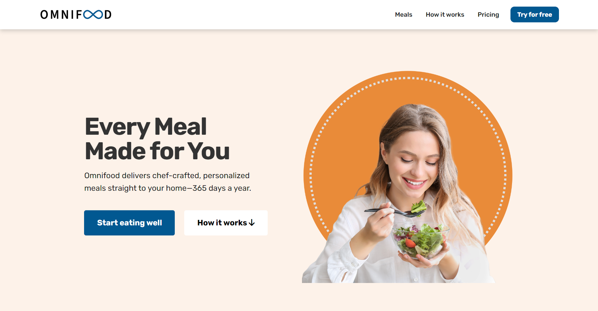

Omnifood
Omnifood is a meal delivery service that caters to your personal preferences. It was redesigned over two weeks to improve accessibility and user experience. It started as a project for a Udemy class and was later transformed to meet web accessibility standards. My redesign aimed to bridge the gap and provide a universally accessible website without compromising on its aesthetics or functionality.
.png)
Accessibility goals
The Omnifood project had a significant challenge - to improve an existing design and make it more inclusive and accessible to everyone. After running several accessibility checkers, it was clear that the original design and code had scored poorly due to low contrast, small text, missing alternative text for images, and other related issues. Therefore, my objective was to significantly raise this score by following the Web Content Accessibility Guidelines (WCAG) to ensure that the website is easily navigable and understandable for all users.

Design and development
For updating Omnifood's website, I followed a two-part approach. First, I retained the website's original flow. Second, I enhanced its design through the use of Bootstrap and SASS. I learned the process of using Bootstrap and SASS via YouTube videos. This approach allowed me to customize Bootstrap's styles which suited my specific needs. The new layout has removed clutter and now prioritizes accessibility and ease of navigation for screen readers and other assistive technologies. I refined the hero section to put more focus on the image, taking inspiration from the best practices of leading meal delivery services. The hero image and logo were created using Adobe Express to maintain visual continuity with the site's original branding while elevating the overall user experience.
Before:


After:

Reflecting
This project has taught me the importance of prioritizing accessibility right from the planning phase of design. This practice can help save time when coding later on. While working on this project, I meticulously checked the color contrast using the WebAim contrast checker and other accessibility checkers to ensure accessibility in my code. I also realized that not all accessibility checkers are foolproof, and it is essential to manually check the code and design for accessibility issues. During this project, I also learned about Sass, which proved to be a game-changer in terms of optimizing CSS. Adapting Bootstrap's predefined styles with Sass required navigating a learning curve, but it ultimately armed me with powerful techniques to craft an efficient, maintainable, and accessible styling structure. This project was not just about development; it was a journey towards a more inclusive web, and every step was a stride in my evolution as a developer and designer.
Check out my projects
Dive into my latest projects where coding meets design.
Take a look and see what grabs your attention!

Weather Application
Engineered a user-friendly weather app integrating live data to deliver accurate forecasts. Focused on clean, accessible interfaces with real-time updates to keep users informed and prepared.

AI Accessiblity Generator
Creating accessible content is effortless with the WCAG Generator. Simply choose your category, generate guidelines, and deepen your understanding of accessibility.
Thanks for stopping by!
I appreciate you checking out my work!
Feel free to email me or connect through LinkedIn.